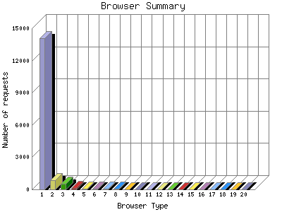

The Browser Summary identifies the most popular web browsers used to visit
this site.
Browsers are broken down by recognized categories such as
Netscape Navigator/Communicator, Microsoft Internet Explorer, WebTV, Opera
and the like. Within each category is also a subgroup by version number
such as 'MSIE 5.0' or 'Netscape 4.5'.
This report shows the first 20 results by number of requests. This report is sorted by number of requests.

| Browser Type | Number of requests | |
|---|---|---|
| 1. | MSIE | 14,099 |
| 2. | Mozilla | 855 |
| 3. | Netscape (compatible) | 511 |
| 4. | msnbot | 154 |
| 5. | Opera | 88 |
| 6. | Netscape | 65 |
| 7. | Konqueror | 60 |
| 8. | Yahoo-MMCrawler | 45 |
| 9. | Scooter | 26 |
| 10. | psycheclone | 25 |
| 11. | ia_archiver | 17 |
| 12. | Gigabot | 17 |
| 13. | psbot | 13 |
| 14. | Googlebot | 12 |
| 15. | LinkWalker | 12 |
| 16. | Googlebot-Image | 9 |
| 17. | libwww-perl | 7 |
| 18. | ichiro | 7 |
| 19. | MJ12bot | 7 |
| 20. | genieBot (http: | 7 |
| [not listed: 28] | 67 | |
This report was generated on September 20, 2006 16:08.
Report time frame October 24, 2005 19:12 to September 19, 2006 18:48.
| Web statistics report produced by: | |
| analog 5.1 | Report Magic for Analog 2.10 |